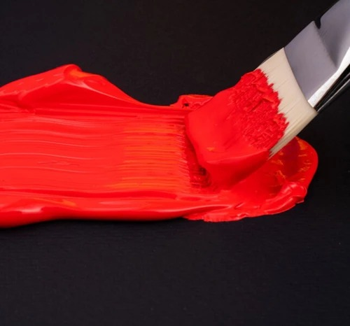

What is Acrylic Paint?
All paints are essentially a mix of pigments and a type of binder that causes the pigments to stick together and form a consistent paste. In the case of acrylic paint, the binder is a combination of acrylic resin particles and water called a polymer emulsion. The water prevents the acrylic resin from drying and hardening immediately.The resin particles are transparent by themselves but appear milky in color due to the addition of water influencing the reflection of light. An acrylic binder is thick, fluid and milky white while wet, but once it dries, it forms a flexible colorless, transparent film.

Benefits of Acrylic Paint
Acrylic paint dries quickly, is very flexible and waterproof once dry. The paints are water-based, so there’s no odor and you can easily clean your hands and painting tools using just soap and water, no need for turpentine or white spirit. They’re also incredibly versatile since they adhere to virtually any surface. Acrylic paints become even more versatile in combination with acrylic mediums. There are various mediums to adjust the characteristics of your paint to your liking, whether you want to thicken or thin your paint, add special effects or give your work an extra glossy or matt finish, anything’s possible with acrylic paint!
Getting Started
You don’t need much to get started with acrylic paint. We’ve put the basic necessities in a row for you: A nice selection of acrylic paint colors. This set with a general selection of colors, for instance, is a great one to start with! Check out the question below about the best starter sets for more information. A selection of brushes in different sizes. The best ones to start with are a few round brushes, and a few flat brushes. Two of each should be enough. Get them in small and large sizes so you have some variety to choose from. You can also add a fine detail brush if you plan to create a detailed painting or a large paddle brush if you want to work on big surfaces. A painting knife can be a great help when mixing colors since you can easily wipe off the paint, brushes can become too clogged with paint if you use them for mixing. A cup of water to rinse your brushes with between colors. A palette to mix your colors on. This tear-off palette is a perfect option if you don’t want to have to clean your palette after painting, you can just tear the top sheet off when you’re done! And last but not least, the surface you’ll be painting on. This can be a canvas, paper, a wall or a household object, as long as it’s slightly absorbent and free of dust and grease, you’re most likely good to go! Extra tip: thin your paint using an acrylic medium instead of water from the start! This helps you spread your paint more easily and evenly, so you can work with the same amount of paint for longer. Learn more about mediums and their benefits in this blog! Once you’ve gotten used to painting with acrylic paint, you can start to expand your acrylic paint collection by adding more colors, different brushes and various acrylic mediums, primers, varnishes and accessories such as scrapers or dosing nozzles. You’ll see that your results will improve once you get the hang of it! Don’t be afraid to experiment with different techniques and tools, this will help you find your own unique style of painting.
Acrylic Paint Set
Amsterdam offers various sets in the Standard Series to help you start your acrylic paint collection. This set of 12 x 20 ml tubes with a general selection of colors is a great one to start with! You can easily mix these colors to create a wider range of different shades. If you’re not that accustomed to mixing yet, you might want to start with a set that contains more colors to choose from. Luckily, Amsterdam also offers bigger sets, including one with 24 x 20 ml, up to one with the complete collection of 90 colors! We also offer some more smaller sets with colors specially selected for different styles of painting, like portraits or landscapes. For people who love to mix their own colors, we offer sets with primary colors and so-called additional mixing colors. The primary colors Yellow, Magenta and Cyan tend to be a bit cooler, while the additional colors Azo Yellow Light, Naphthol Red Medium and Ultramarine create a warmer color palette. The sets also contain white and black to help you create different shades of the colors you mix.
HOW LONG DOES IT TAKE FOR ACRYLIC PAINT TO DRY?
The drying time of acrylic paint depends on various factors, including humidity, temperature and the thickness of your layers, but it’s usually dry to the touch in about 30 to 60 minutes. The paint will fully cure in 3 to 4 days, but you can add layers once the paint is dry to the touch. Varnish can be applied after a minimum of 4 days. Don’t apply acrylic paint at temperatures below 10 °C.
CAN YOU DELAY THE DRYING TIME OF ACRYLIC PAINT?
If you want to work alla prima, also known as direct painting or wet-on-wet, using acrylic colors, you need to act quickly as acrylic paint dries quite fast. Buy yourself some extra time to create stunning color transitions, blend colors smoothly and allow yourself to work on the same area for longer using Amsterdam slow drying medium or acrylic retarder.
WHY DO ACRYLIC COLORS APPEAR DARKER WHEN THEY DRY?
The binder of both acrylic paint and mediums is a dispersion of acrylic resin particles in water. As long as the binder contains water, the binder appears white in color. As the paint dries, the water evaporates and the acrylic resin particles form a uniform, colorless, transparent film. That white cast you see while the color is wet has disappeared completely and the true color of the pigments is now visible. This effect, often called color shift, explains why acrylic paints become darker when they dry. The same counts for acrylic mediums. When you mix a color with a medium, the wet paint will appear slightly lighter than on its own. After drying, the color will be the same as the pure, dried paint.
WHY DOES THE BRUSH STROKE PARTIALLY DISAPPEAR ONCE THE PAINT IS DRY?
Since the binder of acrylic paint consists of acrylic resin particles and water, the paint layer will lose volume when the water evaporates from the paint. This means your brush strokes may become much more subdued once your paint has dried compared to when you first applied it. If you want to keep that distinct brush stroke or palette knife mark, we recommend adding Amsterdam gel, heavy gel or extra heavy gel to your paint! The heavier versions of this gel can even help you create 3D volume differences and extremely thick layers.
CAN ACRYLIC PAINT BE USED ON TOP OF OIL PAINT?
Since oil paint creates an oily film, it is not a suitable base for acrylic paint. Acrylic paint needs a slightly absorbent surface that is free of dust and grease to adhere to.